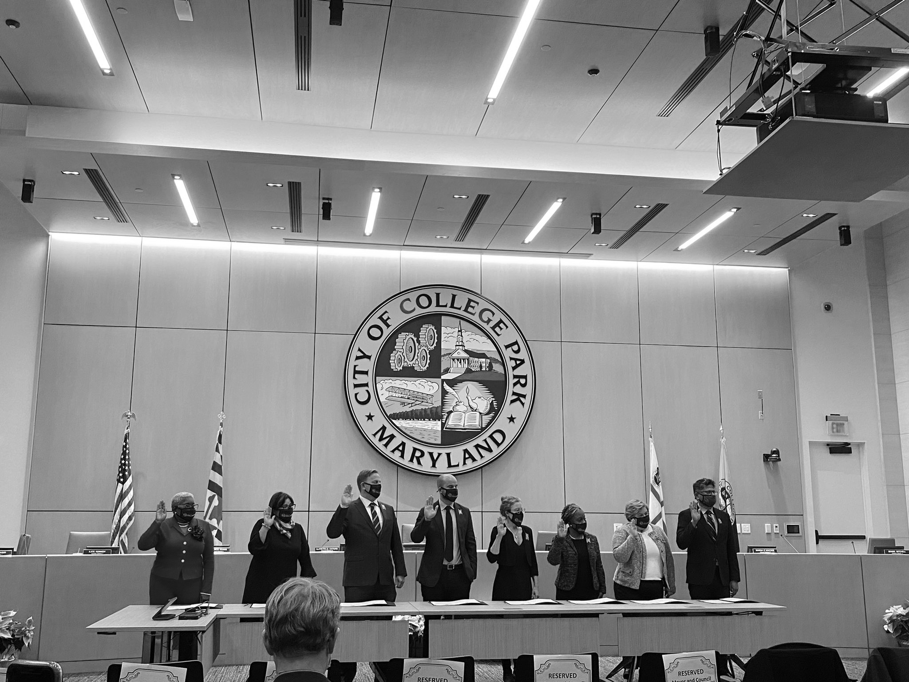
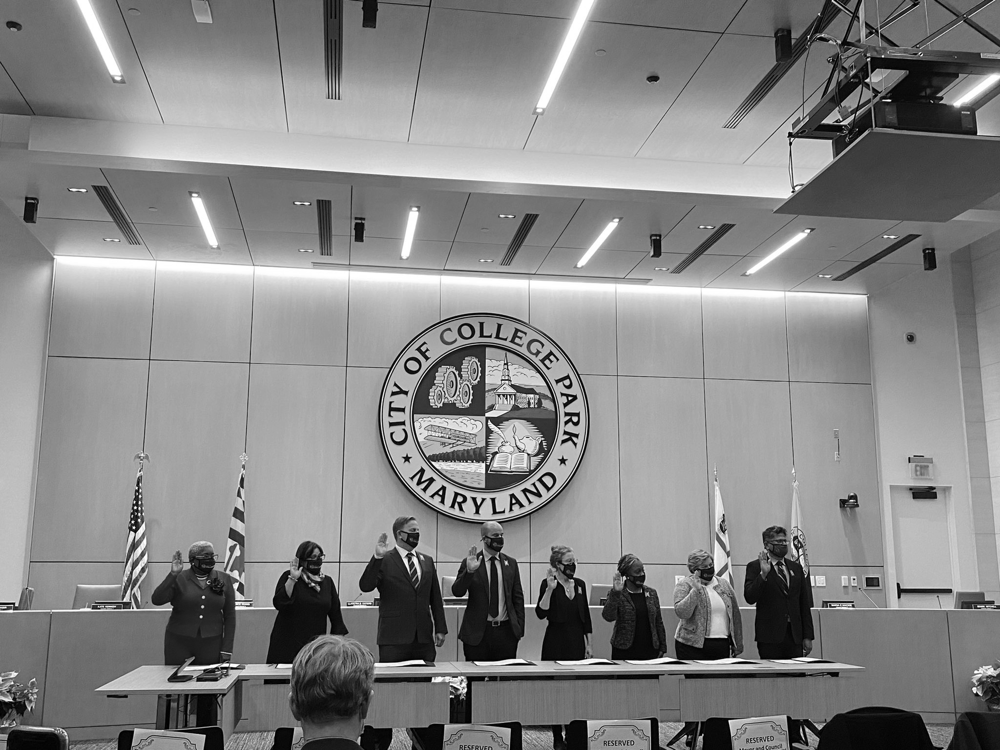

Welcome to my portfolio!
I first fell in love with journalism in ninth grade, taking a basic class on how to format a lead and how to take a picture. I spent that year and all of 10th grade writing stories about local events for my school newspaper.
When my family moved to California after my sophomore year of high school, I leaned on my writing to navigate the challenges of being a “new kid” in 11th grade. I met all of my friends through my journalism class and got to know more of the student body by reporting on local protests, changing detention policies and breaking news stories as school was cancelled while wildfires ravaged Sonoma County.
When searching for what to do after my high school graduation, I felt drawn to the coast I was raised on, committing to the University of Maryland to pursue and develop my attraction to journalism.
In order to find my place in college, I experimented with copy editing and covering Maryland softball during my freshman year. I spent hours picking through stories to make sure we'd never issue a correction and learned about a sport I had no experience in before COVID-19 shut the softball season down.
As the pandemic continued to uproot the world, I made the difficult decision not to return to Maryland for my sophomore year. Instead, I spent a year and a half working remotely for my hometown newspaper, The Press Democrat. I started as an intern and was promoted to an online producer position as I became familiar with the workflow of the organization and furthered my news judgement and writing skills.
As I made a great trek back to Maryland in the fall of 2021, I joined The Diamondback, the independent student newspaper of the University of Maryland, as a city council reporter.
I write two articles a week for The Diamondback, covering weekly College Park City Council meetings and researching local issues like racial injustice and surveillance.
Journalism has been my mechanism to process all sorts of change in my life since ninth grade. The one thing I knew I could return to was a blank Google document and my ability to talk to people and tell their stories.
When I'm not thinking about city council legislation or franticly typing into my laptop, you can find me in my apartment kitchen, baking cookies and breads for my roommates, or in a practice room with my violin, working on a Mozart concerto I can never seem to nail.